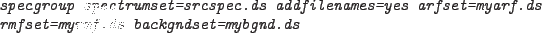

will fill the ANCRFILE, BACKFILE and RESPFILE keywords in the spectrum header. If the background, ARF or response files are not given on the command line then these keywords will be set to the value that they had in the input spectrum or if not present in the input file they will be set to 'NONE'.
Some spectra contain the header keyword 'GROUPING=0'. If this exists in the header of the input spectrum it will be removed from the output file. All other keywords will be copied over.